<!DOCTYPE html>
<html lang="en">
  <head>
    <meta charset="utf-8">
    <meta http-equiv="X-UA-Compatible" content="IE=edge">
    <meta name="viewport" content="width=device-width, initial-scale=1">
    <!-- The above 3 meta tags *must* come first in the head; any other head content must come *after* these tags -->
    <meta name="description" content="">
    <meta name="author" content="">
    <!--<link rel="icon" href="favicon.ico">-->

    <title>United Palace</title>

    <!-- Bootstrap core CSS -->
    <link href="css/bootstrap.min.css" rel="stylesheet">
	<link href="fonts/stylesheet.css" rel="stylesheet">
	<link href="css/bxslider.css" rel="stylesheet">
	<link href="css/style.css" rel="stylesheet">
	<link href="css/media.css" rel="stylesheet">

  </head>

  <body>

    <nav class="navbar navbar-fixed-top">
		<ul class="list-inline text-center">
			<li><a href="javascript:void(0);">About</a></li>
			<li><a href="javascript:void(0);">Contact</a></li>
		</ul>	
    </nav>
	<div class="hamburger">
		<div id="nav-icon1">
			<span></span>
			<span></span>
			<span></span>
		</div>
	</div>
	 <div class="dropdown">
		<a href="javascript:void(0);" id="close">&times;</a>
		<div class="ddlogo">
			
		</div>
		<div class="cstm-container">
			<div class="col-sm-6">
				<div class="about">
					<h2>About</h2>
					<div class="sub-heading">
						United Palace House of Inspiration <br>
						United Palace of Cultural Arts<br>
						United Palace Theater
					</div>
				</div>
			</div>
			<div class="col-sm-6">
				<div class="contact">
					<h2>Contact</h2>
						<p>4140 Broadway</p>
						<p>New York,NY 10033</p>
						<p><a href="mailto:info@unitedpalace.org">Email: info@unitedpalace.org</a></p>
						<p>Phone: 212-568-6700</p>
						<p><span class="ddfb"></span><span>UPHIPalace</span></p>
						<p><span class="ddfb"></span><span>UPCAnyc</span></p>
				</div>
			</div>
		</div>
	</div>
	<div class="banner mht"> 
		<div class="logo"><a href="#"></a></div>
		<div class="banner-slider"> 
			<h1>Reawaken Wonder</h1>
			<div class="slider"> 
				<div class="slide mht" style="background-image:url(images/slider1.jpg)">
						<div class="address">
							Current day United Palace <br />
							(corner of 175th and Wadsworth Avenue)
						</div>
				</div>
				<div class="slide mht" style="background-image:url(images/slider2.jpg)">
						<div class="address">
							Current day United Palace <br />
							(corner of 175th and Wadsworth Avenue)
						</div>		
				</div>
				<div class="slide mht" style="background-image:url(images/slider3.jpg)">
						<div class="address">
							Current day United Palace <br />
							(corner of 175th and Wadsworth Avenue)
						</div>			
				</div>
			</div>
		</div>	
		<div class="scroll-down"><a href="#info">up</a></div>
	</div>	

	<div id="info" class="mht2">
		<div class="cstm-container">
			United Palace is a transformational organization and 
			venue that fuses culture, spirituality, and entertainment. Not only is our theatre one of the largest and most 
			beautiful in New York City, but our community extends around the world.
		</div>
	</div>
	
	<div id="about" class="mht"> 
		<div class="cstm-container clearfix"> 
			<div class="col-sm-4 rm-pad">
				<h2>About</h2>
			</div>
			<div class="col-sm-8 rm-pad">
				<p> 
					The United Palace originally opened in 1930 as the Loew’s 175th Street Theatre - the last of the five Wonder Theatres to be built in the New York metropolitan area. In 1969, United Palace was purchased and preserved by “prosperity preacher” Frederick J. Eikerenkoetter II, better known as Reverend Ike. Today, led by Reverend Ike's son, Xavier Eikerenkoetter, United Palace has continued to evolve its offerings of universal spirituality and creative expression through the United Palace House of Inspiration (UPHI), United Palace of Cultural Arts (UPCA), and United Palace Theatre (UPT). As a house of creativity and transformation, United Palace is unlike any other and is dedicated to communities local and global in pursuit of setting the mind and spirit free. 
				</p>
			</div>
		</div>
	</div>
	
	<div id="blue-bg" class="mht"> 
		<div class="logo"></div>
		<div class="clearfix cstm-container">
			<div class="col-sm-3 rm-pad">
				
			<div class="section-logo"><a href="#"></a></div>
				
			</div>
			<div class="col-sm-8 col-sm-offset-1 rm-pad">
				<p><b>We awaken the mind and spirit through transformation.</b> As a center of universal spirituality, we celebrate the divinity within the individual, inspire the expression of love within community, and redirect the collective consciousness toward the light-led path.</p>
			</div>
		</div>
		
		<div class="clearfix cstm-container newsletter-section"> 
			<div class="col-sm-3 rm-pad">
				<a class="cstm-btn" href="#">livestream</a>
			</div>
			<div class="col-sm-8 col-sm-offset-1 rm-pad">
				<h2> 
					“Nature is creative, and ‘creativity 
					is divinity’. When we are creative,
					we are mirroring Nature and 
					The Creator, using the divine power
					placed within us. Let’s not hold 
					ourselves outside of Nature”
				</h2>
			</div>		
		</div>
	</div>

    <!-- Bootstrap core JavaScript
    ================================================== -->
    <!-- Placed at the end of the document so the pages load faster -->
	<script src="https://ajax.googleapis.com/ajax/libs/jquery/1.12.4/jquery.min.js"></script>  
    <script src="js/bootstrap.min.js"></script>
	<script src="js/custom.js"></script>
	<script src="js/bxslider.js"></script>
  </body>
</html>
